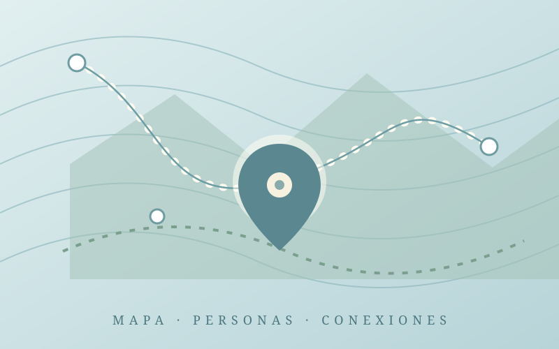
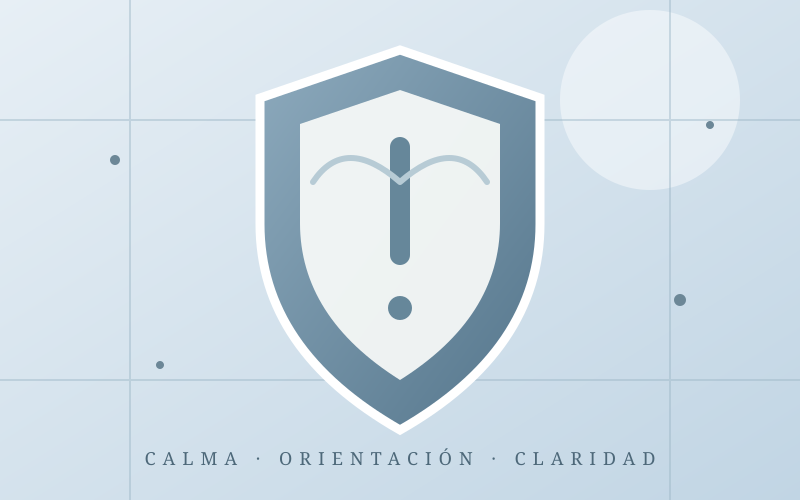

SAN PATRICIO DEL CHAÑAR · NEUQUÉN
Historias, personas y territorio.
Un recorrido por la memoria, la naturaleza y la vida de nuestra tierra.
⌖ CARTOGRAFÍA VIVA
CAMPOAGUAMEMORIADATOSCOMUNIDAD
SAN PATRICIO DEL CHAÑARNUEVE CAMINOS · UN MISMO TERRITORIO
¿A dónde vamos?
Elegí una puerta y empezá a explorar.
 01 · LEERLIBRITOBiblioteca y archivoLibros, prensa y memoria.ENTRAR →
01 · LEERLIBRITOBiblioteca y archivoLibros, prensa y memoria.ENTRAR →
 02 · MIRAROCARINA TVCine documentalDocumentales del territorio.ENTRAR →
02 · MIRAROCARINA TVCine documentalDocumentales del territorio.ENTRAR →
 03 · OBSERVAROCARINA WILDNaturaleza y vida silvestreFauna, flora y ambientes.ENTRAR →
03 · OBSERVAROCARINA WILDNaturaleza y vida silvestreFauna, flora y ambientes.ENTRAR →
 04 · DESCUBRIR¿SABÍAS QUE?Curiosidades del territorioCuriosidades para descubrir.ENTRAR →
04 · DESCUBRIR¿SABÍAS QUE?Curiosidades del territorioCuriosidades para descubrir.ENTRAR →

05 · CONECTARCHAÑAR HUBGuía local y comunidadGuía local y recursos útiles.ENTRAR →
06 · ORIENTARSECÓDIGO CEROOrientación prácticaOrientación para emergencias.ENTRAR → 07 · SEGUIRYOUTUBECanal audiovisualEstrenos y publicaciones.ENTRAR →
07 · SEGUIRYOUTUBECanal audiovisualEstrenos y publicaciones.ENTRAR →
 08 · ESCUCHARRADIO ONLINEUna señal para escucharEscuchá la señal online.ENTRAR →
08 · ESCUCHARRADIO ONLINEUna señal para escucharEscuchá la señal online.ENTRAR →
 09 · COMPARTIROCARINA SOCIALLa comunidad compartePublicaciones y comunidad.ENTRAR →
09 · COMPARTIROCARINA SOCIALLa comunidad compartePublicaciones y comunidad.ENTRAR →
Entrá, explorá y descubrí algo nuevo.
UN PUENTE QUE PERMANECE

Rosa Benita Bustos · Siempre presente
Rosa Benita Bustos
Mi abuela. La persona que más amo.
Universo Ocarina nace a partir de tender puentes. La persona que más amo, Rosa Benita Bustos, mi abuela, una mujer indígena del medio del campo, sin estudios ni títulos, me tendió el puente más grande: el de creer en mí.
A ella dedico todo lo logrado y todo lo que está por venir.
Elías Martínez Fundador